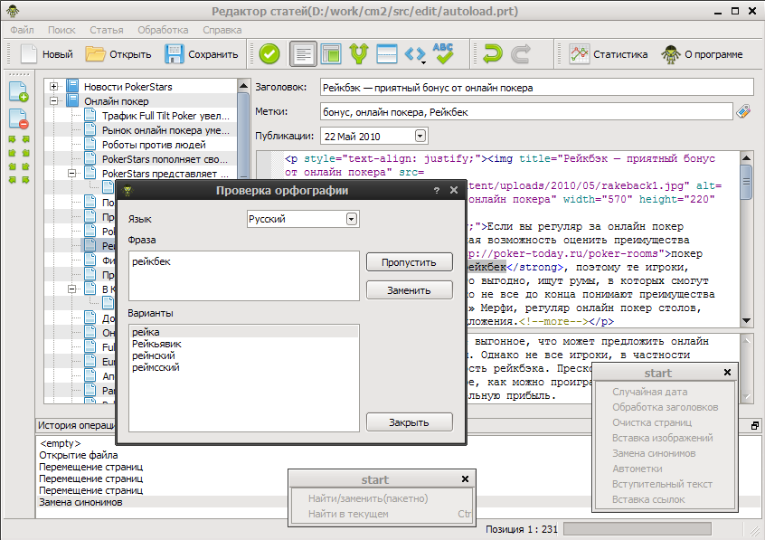

Просмотр
указатель
следующий
|
Документация CM2 TreeEdit 1.3.9
»
Документация CM2 TreeEdit’s!
¶

Добро пожаловать
¶
Список изменений
Дальнейшее развитие
Часто задаваемые вопросы
Ссылки
Основные функции
¶
подсветка html синтаксиса
drag’n’drop
откат изменений
импорт и экспорт различных форматов
встроенный синонимайзер
Описание возможностей
¶
Импорт
CSV генератор
Универсальный парсер
CMS Simple
Wordpress XML
Парсер статей articlesbase/rusarticle
Каталог TXT и HTML файлов(плагин)
RSS Feed
Генератор текста “цепями Маркова”
Advego XML
Импорт страниц сайтов по ссылкам из RSS/Atom
Импорт на PHP
Экспорт
CMS Simple
WordPress XML
WordPress XML-RPC(WP/metaWeblog)
Joomla 1.5
Datalife Engine 8
Zebrum Lite
Статичный сайт
Livejournal.com
Blogger.com
Content Monster 2 XML-PRC
Экспорт текстовых файлов
Публикация материалов в UCOZ
Экспорт в MaxSite CMS
Экспорт в RSS Feed
Экспорт в Datalife Engine 9.0
Поиск
Пакетный поиск
Найти в текущей статье
Статья
Добавить вступление
Разделить на две
Автонарезка
Проверка орфографии
Вставка HTML тегов
Рерайтер
Обработка
Переименование файлов изображений
Случайная дата
Генерация заголовков статей
Обработка заголовков статей
Очистка страниц
Вставка изображений
Замена синонимов
Автометки
Вступительный текст
Вставка ссылок
Циклическая вставка строк в статьи
PHP плагин “Зачистка контента”
PHP плагин “Удаление вложенных и непарных тэгов”
Проверка уникальности статей
Гобонизация
PHP плагин “Расстановка русских кавычек”
Разное
Статистика
Утилита получения ссылок на YouTube видео
Оглавление
Документация CM2 TreeEdit’s!
Добро пожаловать
Основные функции
Описание возможностей
Следующий раздел
Список изменений
На этой странице
Исходный текст
Быстрый поиск
Введите слова для поиска или имя модуля, класса или функции.
Просмотр
указатель
следующий
|
Документация CM2 TreeEdit 1.3.9
»